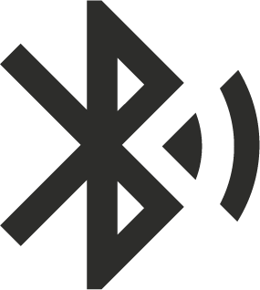

<!-- <ion-header>
	<ion-navbar>
		<ion-title>Bluetooth</ion-title>
	</ion-navbar>
</ion-header> -->
<ion-content padding>
	<div class="div-link">
		
		<h1>Vincular</h1>
	</div>
	<div class="div-list">
		<ion-card>
			<ion-card-header align="center">
				<b>Lista de dispositivos</b>
			</ion-card-header>
			<ion-list>
				<ion-scroll scrollY="true">
					<button ion-item *ngFor="let device of devices" (click)="deviceSelected(device)">
						<h2>{{ device.name || 'Sin nombre' }}</h2>
						<p>{{ device.id }}</p>
						<p>RSSI: {{ device.rssi }}</p>
					</button>
				</ion-scroll>
			</ion-list>
		</ion-card>
	</div>
	<div align="center">
		<button class="button" ion-button color="dark" (click)="initializeBle()">ESCANEAR</button>
		<button class="button" ion-button color="dark" (click)="disconnect()">DESCONECTAR</button>
		<button class="button" ion-button color="dark" (click)="skip()">OMITIR</button>
	</div>
</ion-content>
<ion-footer>
	<ion-toolbar color="dark" align="center">
		
	</ion-toolbar>
</ion-footer>